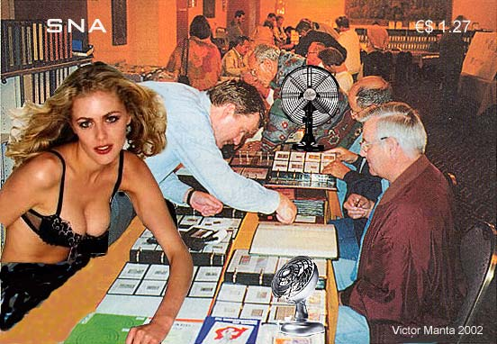
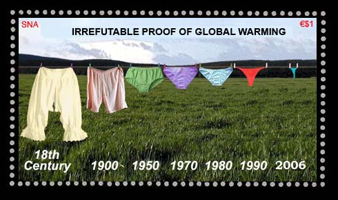
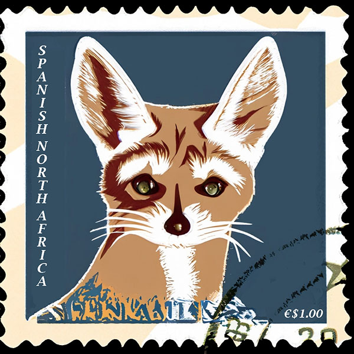

|
Created:
09/07/2002. Revised:
2/3/2024
. |
|
|
THE STEMPELVENTILATOR
In order to fight against the adverse effects of the global warming on stamps and on stamp collectors, the SNAPO has contracted with a renown German company the production of two models of special philatelic fans, commercialized under the common name of Stempelventilator. This name was proposed by an automatic translator program, found on the Web, and which suggested Stempelventilator as translation into German of the words "stamp fan". The big advantage of the proposed models is that they not only cool the stamps, but also don't spread them through the whole room, as the usual fans do. This became possible thanks to a recently work, published in Nature, about the cold electromagnetic high density plasma interface disintegration, a principle discovered theoretically and then implemented practically by a known SNA physicist. The Stempelventilator creates an intensive localized flow of air, around each stamp and around true stamp fans.
 The SNAPO issued on the 12th of December 2002 a picture post card that presented all models that are available. One of them, called the Stampelventilator Donna, is more convenient for shorter distances and smaller volumes. One can see it on the picture card, on the right front side of the table. The model Stempelventilator Gigant can cover bigger workspaces, and it is shown on the opposite side of the same table. For further information on prices and delivery conditions please contact directly the Window Clerk #1, at: SNAPO, 10 Women Street, 1000 Ciudad de Leon, Spanish North Africa. Credits: The name of the attractive lady, who in her free time is also a passionate collector, is Donna AIR (no kidding!). THE DIFFICULT TIMES Stephen E. Esrati wrote: What does global warming do to your stamps? img border="0" src="sna-un.jpg" class="responsive" width="600" height="417"> Victor Manta answered: The short answer is: the
global warming does nothing to our stamps. The longer answer says that the increase by 0.9 degrees of the global
mean temperature during the last century (known as global warming),
a figure being established by the American Academy of Sciences, doesn't
have an adverse influence on your stamps. Please admire below a new SNA miniature sheet, dedicated to the most irrefutable proof of the disaster that hangs upon our heads, like a Damocles' sword:  Due to its obvious political incorrectness and its cached sexual message, the Revolutionary Council of SNA confiscated and burned the entire print run of 10,000 pieces. Only one piece escaped, and it is conserved at the SNA Postal Museum, in its subterranean, permanently cooled Cave. But the fennec, well the fennec does not care about global warming!  Note. "With regard to the basic question of whether climate change is
occurring, the report notes that measurements show that temperatures at the
Earth's surface rose by about 1 degree Fahrenheit (about .6 degrees Celsius)
during the 20th century. ... |
|
Created:
09/07/2002. Revised:
2/3/2024
. |
|